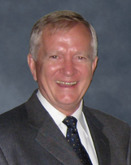

<!DOCTYPE html>
<html lang="en">

<head>
    <meta charset="UTF-8">
    <meta name="viewport" content="width=device-width, initial-scale=1.0">
    <link rel="stylesheet" type="text/css" href="./styles/AvaChi.css">
    <link rel="stylesheet" type="text/css" href="./styles/AvaMedia.css">
    <link href='https://fonts.googleapis.com/css?family=Kanit' rel='stylesheet'>
    <link rel="preconnect" href="https://fonts.googleapis.com">
    <link rel="preconnect" href="https://fonts.gstatic.com" crossorigin>
    <link href="https://fonts.googleapis.com/css2?family=Noto+Sans+TC:wght@300&display=swap" rel="stylesheet">
    <script src="https://ajax.googleapis.com/ajax/libs/jquery/3.5.1/jquery.min.js"></script>
    <title>AvatarMedicine</title>
</head>


<body>
    <!--top-->
    <div class="topboard">
        <div class="topboard-left">

            <div class="topboard-left-1" style="text-align: center;">Avatar Medicine</div>
            <div class="topboard-left-2" style="text-align: center;">2023</div>

        </div>
        <div class="topboard-middle"></div>
        <div class="topboard-right">
            <div class="TBR-items-NULL"></div>
            <div class="TBR-items-NULL"></div>
            <a href="index.html" class="TBR-items">
                <div>Chinese</div>
            </a>
            <a href="ForumEN.html" class="TBR-items">
                <div>English</div>
            </a>
            <!-- 下拉選單觸發器 -->
            <div class="dropdown-trigger">Menu</div>
            <div class="dropdown-menu">
                <a href="#forum" class="TBR-items">
                    <div>Introduction</div>
                </a>
                <a href="#talker" class="TBR-items">
                    <div>Speakers</div>
                </a>
                <a href="#agenda" class="TBR-items">
                    <div>Agenda</div>
                </a>
                <a href="https://www.cancerfree.io/zh-tw/index" class="TBR-items">
                    <div>Contact</div>
                </a>
            </div>
        </div>
    </div>
    <div class="topboard-coverd"></div>


    <!--Contant-->
    <div class="imageKV"> </div>
    <div class="gradient-background">
        <div class="session">
            <div class="session_title">
                <div class="session_title_txt" , id="forum" , style="color: aliceblue;">Introduction</div>
            </div>
            <div class="IM_contant" , style="color: aliceblue;">
                <p>
                    ​The Avatar Medicine Forum promotes the concept of virtual and physical avatars for patient therapy.
                    Let everyone understand that avatar medicine may reduce the risks that patients need to bear during
                    the treatment process, and it can overcome the limitations of distance and time. The advanced
                    technologies include organoids, model organisms, big data, metaverse, etc. The general public can
                    understand from a new perspective that these technologies have the potential to replace patients
                    themselves and reduce medical risks. At the same time, the forum connects academic and industrial
                    circles, so that potential technologies and products can be demonstrated.
                </p>
                <p>&#20;</p>
                <p>
                    This forum invites heavyweight speakers from industry, government, academia, and research circles to
                    share with us the changes and evolution of avatar medicine brought by the post-epidemic era. It is
                    hoped that in the near future, through big data, AI, AR/VR/XR or NFT, virtual avatars can be
                    realized in clinical and teaching.
                </p>
                <p>&#20;</p>
            </div>
        </div>


        <!-- <div class="session">
            <div class="session_title">
                <div class="session_title_txt" , id="VIP" , style="color: aliceblue;">Honored Guest</div>
            </div>


        </div> -->

        <div class="session">
            <div class="session_title">
                <div class="session_title_txt" , id="talker" , style="color: #000000;">Speakers</div>
            </div>
            <!--1-->
            <div class="vip_intro normal-direction">
                <div class="vip_photo">
                    
                </div>
                <div class="vip_margin">
                    <div class="vip_name">James S. Miser
                    </div>
                    <div class="vip_title">Former Director, City of Hope National Medical Center, USA
                    </div>
                    <div class="vip_description">
                        Dr. Miser is an international expert in pediatric hematology/oncology,
                        dedicated to innovative cancer treatments. He currently teaches at Taipei
                        Medical University and he once led the City of Hope National Medical Center.
                        In cancer research, he plays a pivotal role in various key committees, including
                        the pediatric cancer research group and the Wilms tumor monitoring committee.
                    </div>
                </div>
            </div>

            <div class="vip_intro reverse-direction">
                <div class="vip_photo">
                    
                </div>
                <div class="vip_margin">
                    <div class="vip_name">Luke Dimasi</div>
                    <div class="vip_title">Senior Product Management Director,Emulate Inc.
                    </div>
                    <div class="vip_description">
                        Luke Dimasi is a marketing and product management expert in the life sciences
                        and biotechnology sector, with over 15 years of experience. He currently serves
                        as the Senior Director of Product Management at Emulate, Inc. Deeply attuned
                        to customer needs, he transforms them into successful strategies, leading teams
                        to launch innovative products that elevate scientific research. With a background
                        in cellular and molecular biology, Dimasi's expertise spans drug discovery, genomics,
                        and areas like stem cell therapy.
                    </div>
                </div>
            </div>

            <!--1-->
            <div class="vip_intro normal-direction">
                <div class="vip_photo">
                    
                </div>
                <div class="vip_margin">
                    <div class="vip_name">Tony Chung</div>
                    <div class="vip_title">CEO ,Instant NanoBiosensors Co., Ltd.</div>
                    <div class="vip_description">
                        Tony Chung is the CEO of Instant NanoBiosensors Co., Ltd., with extensive experience in the
                        field of biotechnology. He entered the industry in 2002 and held key positions in several
                        renowned companies, including Genetech biotech Co., Ltd in Taiwan, which represents Illumina. He
                        is also a co-founder of Instant NanoBiosensors Co., Ltd. In 2020, he became a strategic partner
                        of Merck KGaA.
                        Mr. Tony Chung, with his outstanding leadership style and unwavering spirit of innovation,
                        propels Instant NanoBiosensors Co., Ltd. forward, dedicating himself to the enhancement of the
                        biotechnology industry.
                    </div>
                </div>
            </div>

            <div class="vip_intro reverse-direction">
                <div class="vip_photo">
                    
                </div>
                <div class="vip_margin">
                    <div class="vip_name">Long-Sheng Lu</div>
                    <div class="vip_title">Attending physician,Taipei Medical University Hospital </div>
                    <div class="vip_description">
                        Dr. Long-Sheng Lu is an Associate Professor at Taipei Medical University,
                        concurrently holding positions in the Institute of Biomedical Materials and
                        Tissue Engineering, Biomedical Engineering, and Regenerative Medicine Program.
                        He is also an attending physician at Taipei Medical University Hospital and
                        serves as the Director of the Cell Therapy Center.
                    </div>
                </div>
            </div>
            <!--1-->
            <div class="vip_intro normal-direction">
                <div class="vip_photo">
                    
                </div>
                <div class="vip_margin">
                    <div class="vip_name">Jack Lee</div>
                    <div class="vip_title">Senior Genetic Technology Expert,NGS Technical Instructor</div>
                    <div class="vip_description">
                        Jack with 17+ years in Taiwan's biotech sector, Jack is a top genetic technology
                        expert. He pioneered gene chips, NGS for clinics, and led vital projects like automated
                        rare disease gene screening. His work linking genetics and medicine propels Taiwan's
                        genetic medicine advancement.
                    </div>
                </div>
            </div>

            <div class="vip_intro reverse-direction">
                <div class="vip_photo">
                    
                </div>
                <div class="vip_margin">
                    <div class="vip_name">I-Hsuan Liu </div>
                    <div class="vip_title">Professor,National Taiwan University </div>
                    <div class="vip_description">
                        Professor Yi-Hsuan Liu, based at National Taiwan University, focuses on animal development,
                        regeneration, and stem cell research. By employing gene editing and genetic techniques,
                        his work aims to decipher organogenesis mechanisms and develop strategies for effective tissue
                        regeneration.
                    </div>
                </div>
            </div>
            <!--1-->
            <div class="vip_intro normal-direction">
                <div class="vip_photo">
                    
                </div>
                <div class="vip_margin">
                    <div class="vip_name">Rock Wu </div>
                    <div class="vip_title">COO,Uniigym Co.,Ltd. </div>
                    <div class="vip_description">
                        previously served as Exec. Director of Taiwan Sports and Fitness Industry Association's
                        Innovation
                        Committee and COO of Asia Sports Energy Group. Leading Uniigym, he innovates sports tech and
                        fitness
                        content, using gamification to lower barriers and promote a health-conscious lifestyle through
                        interactive
                        sensor fitness apps.
                    </div>
                </div>
            </div>

            <div class="vip_intro reverse-direction">
                <div class="vip_photo">
                    
                </div>
                <div class="vip_margin">
                    <div class="vip_name">Yen-Lin Liu</div>
                    <div class="vip_title">Attending physician, Taipei Medical University Hospital</div>
                    <div class="vip_description">
                        Dr. Liu is the Chief of Pediatric Oncology at Taipei Medical University Hospital and an
                        Assistant
                        Professor at Taipei Medical University. Specializing in neuroblastoma, pediatric oncology, and
                        pediatric
                        hematology, he has extensive experience in hematopoietic stem cell transplantation. He holds a
                        medical
                        degree from National Cheng Kung University and a Translational Medicine doctoral degree from
                        National
                        Taiwan University.
                    </div>
                </div>
            </div>

            <!--1-->
            <div class="vip_intro normal-direction">
                <div class="vip_photo">
                    
                </div>
                <div class="vip_margin">
                    <div class="vip_name">Jeng-Fong Chiou</div>
                    <div class="vip_title">President,Taiwan Society for Therapeutic Radiation and Oncology
                    </div>
                    <div class="vip_description">
                        Dr. Chiu Chung-Feng is an esteemed expert in oncology and medical education. With a Ph.D. from
                        the National Defense Medical Center, he's a distinguished professor at Taipei Medical
                        University, focusing on radiation therapy, cancer research, and innovative treatments. His
                        leadership spans hospital presidency and program directorship. Recognized with awards, including
                        Outstanding Research Project and Excellent Teacher, Dr. Chiu's commitment to advancing cancer
                        care, immunotherapy, and molecular biology makes him a pivotal figure in oncology.
                    </div>
                </div>
            </div>


        </div>

        <div class="session-agenda">
            <div class="session_title">
                <div class="session_title_txt" , id="agenda" , style="color: black;">Agenda</div>
                <div class="agenda">
                    <picture>
                        <!-- 寬度小於768使用agendaChi_media.png，否則使用agendaChi.png -->
                        <source media="(max-width: 768px)" srcset="./2023_images/agendaEng_media.png">
                        
                    </picture>
                </div>
            </div>
        </div>


        <div class="session">
            <div class="faq">
                <div class="session_title">
                    <div class="session_title_txt" , style="color: black;">FAQ</div>
                    <div class="faq-item">
                        <ul>
                            <li>
                                <div class="qa-title">What is Avatar Medicine?</div>
                                <div class="qa-content">
                                    Avatar Medicine is to build virtual or physical twins for patients, and it decreases
                                    the risk which patients have to take during their treatments. Also, it breaks the
                                    limit of distance and time.
                                </div>
                            </li>

                            <li>
                                <div class="qa-title">What is physical avatar? </div>
                                <div class="qa-content">
                                    Physical twins usually comes from human biopsy, or they can be a model that are
                                    similar to human. They can simulate certain syndromes of human diseases. Through
                                    observing their reactions to environmental stimuli, we can do research, diagnoses
                                    and offer help in treatment.
                                </div>
                            </li>

                            <li>
                                <div class="qa-title">What is virtual avatar? </div>
                                <div class="qa-content">
                                    Virtual twins build images and models by analyzing and digitalizing data from human.
                                    By operating a predictive program, virtual twins can provide clinical consultation,
                                    diagnoses and assistance in treatment.
                                </div>
                            </li>

                            <li>
                                <div class="qa-title">What is the fee for Avatar Medicine Forum? </div>
                                <div class="qa-content">
                                    0. Our Forum is free of charge. It only takes you 2 hours.
                                </div>
                            </li>

                            <li>
                                <div class="qa-title">How to register?</div>
                                <div class="qa-content">
                                    Go to the event website, click the link and leave your contact information!
                                </div>
                            </li>
                        </ul>

                    </div>
                </div>
            </div>
        </div>

        <div class="session">
            <div class="session_title">
                <div class="session_title_txt" , style="color: black;">Registration</div>
            </div>
            <div class="portal">
                <div class="portal-left">
                    <a href="https://www.accupass.com/go/Avatar2023">
                        
                    </a>
                </div>
                <div class="portal-right">
                    <a
                        href="https://www.eventbrite.com/e/avatar-medicine-forum-2023-tickets-697936054527?aff=oddtdtcreator">
                        
                    </a>
                </div>
            </div>
        </div>

    </div>
    <div class="white-board">


        <div class="session">
            <div class="session_title">
                <div class="session_title_txt" , style="color: black;">Organizer</div>
            </div>
            <div class="organizer">
                
            </div>
        </div>

        <div class="session" style="padding-top: 0;margin-top: 0;padding-bottom: 0;padding-bottom: 0;">
            <div class="session_title">
                <div class="session_title_txt" , style="color: black;">Co-organizer</div>
            </div>
            <div class="organizer">
                
            </div>
        </div>

        <div class="session">
            <div class="session_title">
                <div class="session_title_txt" , style="color: black;">Sponsor</div>
            </div>
            <div class="sponsor">
                
            </div>
        </div>
    </div>

    <div class="endboard">
        <div class="endboard-up">
            <div class="contact_us">Contact US</div>
        </div>
        <div class="endboard-down">
            <div class="phone">Phone: +886-2-27322701</div>
            <div class="address">Address: 3F.-2, No. 56, Lane 258, Ruiguang Rd, Neihu District, Taipei City</div>
        </div>
    </div>

    <!--xxxxxxxxxxxxxxxxxx-->
    <a href="#top">
        <div class=go-top></div>
    </a>
    <div class="lefticon"></div>
    <!-- <div class="dogicon"></div> -->
</body>

<script>
    /*QA click*/
    $(".qa-title").click(function () {
        $(".qa-content").slideUp();
        $(".qa-title.on").removeClass("on");
        $(this).next().stop().slideDown();
        $(this).stop().addClass("on");
    });

    /*移移動偏移往上*/
    $(document).ready(function () {
        $('a[href^="#"]').on('click', function (event) {
            var target = $(this.getAttribute('href'));

            if (target.length) {
                event.preventDefault();

                // 滾動偏移量
                var offset = 130; // 你可以調整這個值來改變滾動的偏移量，正數表示偏上，負數表示偏下

                $('html, body').stop().animate({
                    scrollTop: target.offset().top - offset
                }, 1000);
            }
        });
    });

    /*禁止手機用戶左右活動*/
    document.addEventListener('touchstart', function (e) {
        let startX = e.touches[0].pageX;
        let startY = e.touches[0].pageY;

        document.addEventListener('touchmove', function (e) {
            let moveX = e.touches[0].pageX;
            let moveY = e.touches[0].pageY;

            // Check if horizontal move is larger than vertical move
            if (Math.abs(moveX - startX) > Math.abs(moveY - startY)) {
                e.preventDefault();
            }
        }, { passive: false });
    }, { passive: false });


</script>

</html>